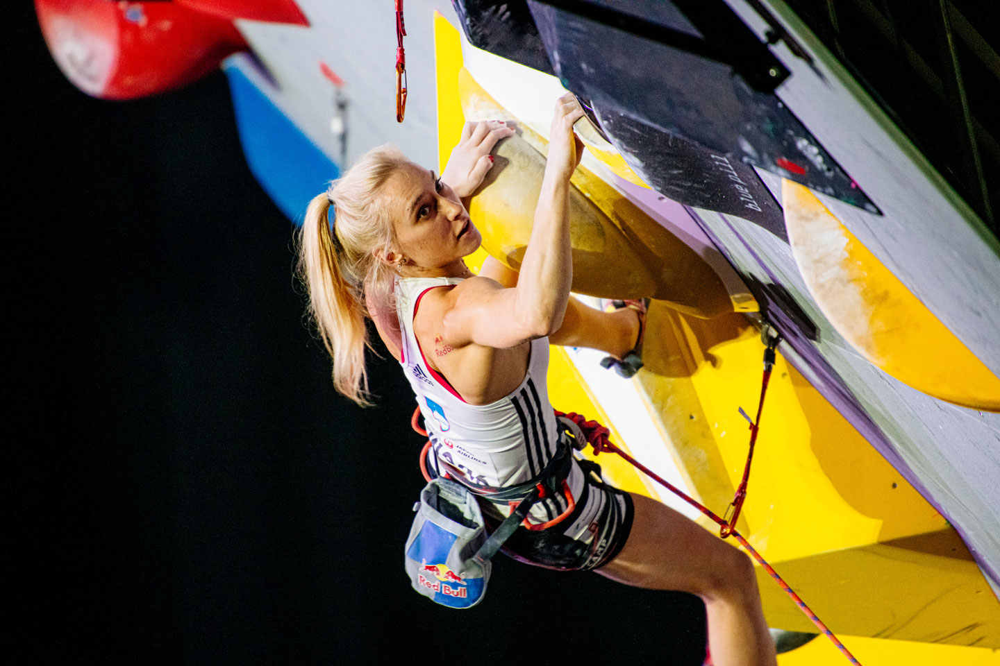
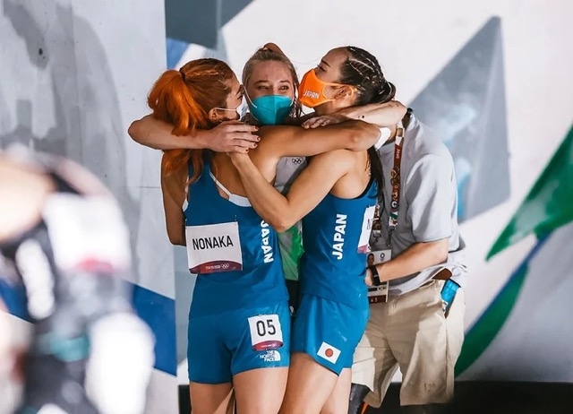

Climbing Competions
Worldcup
Bouldering
The International Federation of Sport Climbing (IFSC) employs an indoor format (although competitions can also take place in an outdoor setting) that breaks the competition into three rounds: qualifications, semi-finals, and finals. The rounds feature different sets of four to six boulder problems, and each competitor has a fixed amount of time to attempt each problem. At the end of each round, competitors are ranked by the number of completed problems with ties settled by the total number of attempts taken to solve the problems. Some competitions only permit climbers a fixed number of attempts at each problem with a timed rest period in between.[30] In an open-format competition, all climbers compete simultaneously, and are given a fixed amount of time to complete as many problems as possible. More points are awarded for more difficult problems, while points are deducted for multiple attempts on the same problem.
Lead climbing
The development of the safer format of sport climbing in the early 1980s led to rapid development in the sport of competition lead climbing. The first major international lead climbing competition was held in Italy at Sportroccia in 1985. By the late 1990s, competitive lead climbing was joined by competition bouldering, and competition speed climbing in what was to become the annual IFSC Climbing World Cup and biennial IFSC Climbing World Championships.
Speed climbing
Competition speed climbing as governed by the International Federation of Sport Climbing (IFSC) takes place on 15-metre (49 ft) artificial walls. Competitors climb a 5-degree overhanging IFSC-certified wall, with an auto-belaying system from the top of the wall. Since 2007 the IFSC has created a standard wall for the world record. The standard has a simple rule and it involves climbers competing on the same route, side by side, and whoever reaches the top first wins. The holds and order are always identical, and the difficulty rating is around F6b (approximately YDS 5.10c), which is a level most recreational climbers could complete. The IFSC also sanctions speed climbing competitions and those events that entail world record attempts.
Olympics
In August 2016, the IOC announced that competition climbing would be a sport in the 2020 Summer Olympics, but that lead, boulder, and speed would be combined into a single medal event; this caused upset however it allowed the maximum number of disciplines to feature at the Olympics. During August 3–6, 2021, Alberto Ginés López and Janja Garnbret won the first-ever men's and women's Olympic climbing gold medals at the Tokyo Olympics, in the newly created combined event consisting of all three disciplines. After the Tokyo Olympics, it was announced that the 2024 Paris Olympics would only combine lead climbing and bouldering into a single medal event, with speed climbing split out into a standalone medal event.
